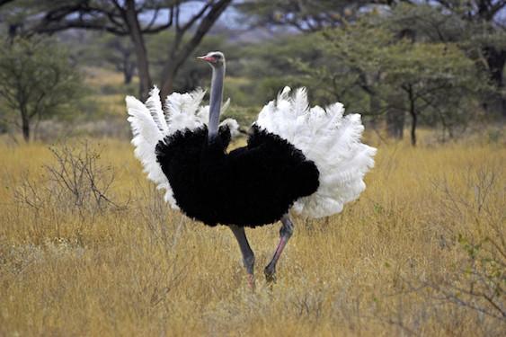

Wow! Based on your answers... You share similarities with the Ostrich (Struthio camelus)

The Ostrich stands at a whopping 7-9 feet tall, making it the largest bird species! The Ostrich is also extremely athletic reaches running speeds up to 43 miles per hour at constant pace and some have recorded 60 miles per hour in a short burst. Though it may not seem like it, Ostriches are actually extroverts and usually roam in groups of 50 Ostriches, but they can be aggressive if they feel threatened (especially when it comes to their offspring). Just like the Ostrich, you are a tall, athletic, extrovert that can get aggressive when you need to.
Click on Ceasar to Restart!